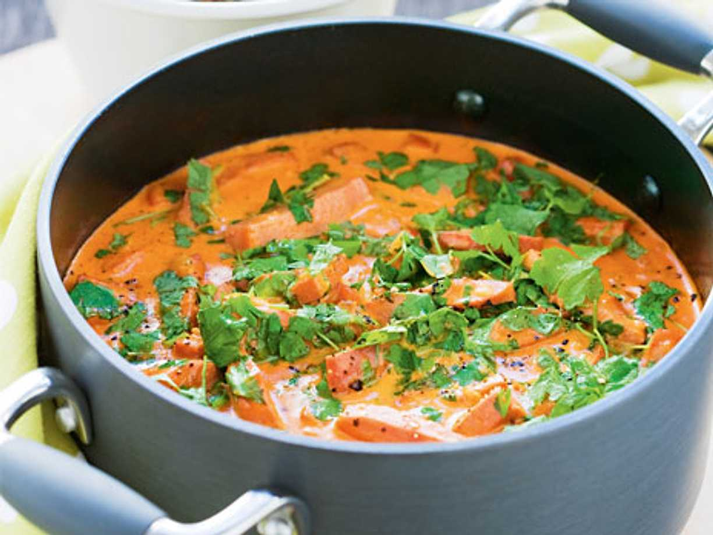

Korv Stroganoff

Falukorv i tomatsås med ris, går enkelt att laga och blir många matlådor.
Ingredienser
Instruktioner
- Koka Riset
- Stek Falukorv och lök
- Bland i tomatpure och en buljontärning
Tips
- Lite grädde kan göra såsen krämigare.
- Stek tomatpuren lite så ger den mer smak.
Receptlistan